무선설비기사 (2009-03-01 기출문제)
1과목: 디지털 전자회로
1. 그림과 같은 궤환 증폭기에 관한 설명 중 틀린 것은?
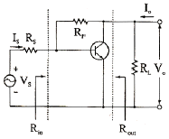
- 궤환으로 인하여 입력임피이던스 Rin은 감소한다.
- 궤환으로 인하여 출력임피이던스 Rout는 감소한다.
- 궤환으로 인하여 전류이득 Io/Is는 감소된다.
- Rf가 작을수록 Vo는 커진다.
(정답률: 알수없음)

2. 다음 중 C급 전력증폭기에 관한 설명으로 틀린 것은?
- 입력신호의 전주기 동안에 컬렉터 전류가 흐르기 때문에 소비전력이 매우 크다.
- B급 증폭기보다 효율이 높다.
- C급 증폭기의 컬렉터에 저항부하를 연결하면 펄스 형태에 가까운 출력이 나타난다.
- 컬렉터에 연결한 저항대신 LC 병렬공진 회로를 사용하면 공진주파수의 전압 파형을 정현파로 만들 수 있다.
(정답률: 37%)
3. 다음 연산증폭기의 역할은? (단, R = R' 이고 다이오드는 이상적이다.)
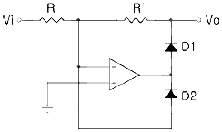
- 발진회로
- 클램프회로
- 전파정류기
- 반파정류기
(정답률: 82%)
4. 다음 중 프리엠퍼시스(pre-emphasis) 회로와 관련 있는 것은?
- 저역통과필터
- 고역통과필터
- 대역통과필터
- 대역저지필터
(정답률: 50%)
5. 트랜지스터 증폭기에서 바이어스(bias)에 대한 설명 중 가장 적합한 것은?
- 희망하는 동작모드를 만들기 위해 트랜지스터 또는 소자에 직류전압을 인가하는 것을 말한다.
- 전류 캐리어로 자유전자와 정공에 의해 특성화되는 것을 말한다.
- 베이스와 컬렉터 사이의 전류이득을 말한다.
- 트랜지스터가 도통되지 않았을 때의 상태를 말한다.
(정답률: 84%)
6. 필터법을 이용하여 DSB 파에서 SSB 파를 얻어내려면 어떤 종류의 필터를 사용해야 하는가?
- 저역필터(LPF)
- 전대역필터(APF)
- 고역필터(HPF)
- 대역필터(BPF)
(정답률: 알수없음)
7. 다음 중 대수증폭기(logarithm Amp)로 적합한 것은?
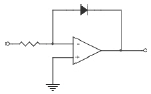
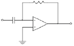
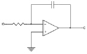
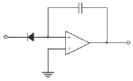
(정답률: 85%)
8. 다음 중 시미트(Shmitt)트리거 회로의 응용이 아닌 것은?
- 구형파회로
- 증폭회로
- 쌍안정회로
- 전압비교회로
(정답률: 36%)
9. 다음 전파정류회로에서 전류 I = 2 sin a[A], 부하저항 RL =5[Ω], 다이오드 D1, D2의 정저항f= 0일 때 다이오드의 최대역 전압은?
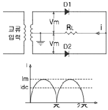
- 5[V]
- 10[V]
- 15[V]
- 20[V]
(정답률: 47%)
10. 시프트 레지스터에서 4로 나누려면 몇 비트 이동해야 하는 가?
- 오른쪽으로 2비트
- 왼쪽으로 2비트
- 오른쪽으로 4비트
- 왼쪽으로 4비트
(정답률: 알수없음)
11. 그림과 같은 등가회로로 표시되는 발진회로의 발진 주파수는?
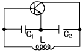
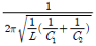
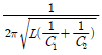
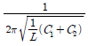
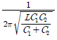
(정답률: 알수없음)
12. 다음 카르노 맵의 함수를 간략화한 것은?
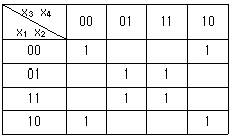
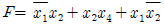
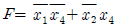
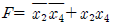
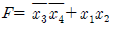
(정답률: 64%)
13. 그림과 같은 회로에서 Zenner 다이오드의 파괴 전압은 50[V] 이며, 그 전류 범위는 5 . 40[mA]이다. 부하저항 RL에 흐르는 전류 IL의 최대 값은 얼마인가?
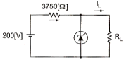
- 45[mA]
- 35[mA]
- 25[mA]
- 15[mA]
(정답률: 60%)
14. 다음과 같이 JK플립플롭을 결선하면 이는 어떤 플립플롭처럼 동작하는가?
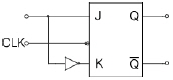
- T
- D
- RS
- M/S-JK
(정답률: 40%)
15. 다음 회로에서 출력 VO가 옳은 것은?
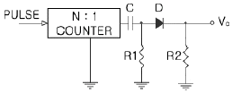
- 양(+)의 펄스
- 음(-)의 펄스
- 대칭 펄스
- 반파 대칭 펄스
(정답률: 60%)
16. 다음 중 크로스오버왜곡(crossover distortion)이 생기는 증폭기는?
- A급 BJT(bipolar junction transistor) 증폭기
- B급 푸시-풀(push-pull) 증폭기
- 이미터 공통(common-emitter) 증폭기
- 컬렉터 골통(common-collector) 증폭기
(정답률: 73%)
17. 다음 중 ECL(Emitter Coupled Logic) 회로의 특성이 아닌 것은?
- TTL보다 소비전력이 크다.
- 트랜지스터를 포화시키지 않고 사용할 수 있다.
- CMOS보다 동작 속도가 빠르다.
- 기본적으로 NOT또는 NOR 게이트의 출력단자를 갖는다.
(정답률: 46%)
18. 다음 중 PPL(위상동기루프)을 구성하는 요소와 관련 없는 것은?
- 위상 비교기
- LPF
- 인코더
- VCO
(정답률: 알수없음)
19. 다음 중 Wien Bridge 발진기의 정궤환 요소는?
- RL 회로망
- LC 회로망
- 전압분배기(voltage divider)망
- 선행-지연회로망(lead-lag network)
(정답률: 31%)
20. 상보대칭 SEPP(Complementary Symmetric Sjngle Ended Push-pull) 회로의 설명으로 옳지 않은 것은?
- 출력 변성기를 사용하지 않아도 된다.
- 전기적 특성이 똑같은 NPN과 PNP 트랜지스터를 사용한다.
- 입력측에 위상반전회로가 필요 없다.
- 두 개의 트랜지스터가 부하에 대해서 직렬로 연결된 회로이다.
(정답률: 55%)
2과목: 무선통신 기기
21. 무선통신에 사용되는 스펙트럼 확산통신방식의 특징으로 가장 적합한 것은?
- 도청으로부터 메시지 보호가 유리하다.
- 고전력 스펙트럼이 필요하다.
- 주로 대용량 M/W 시스템에 적용한다.
- 주파수 대역폭이 좁다.
(정답률: 알수없음)
22. QAM 복조기에서 In-Phase 기준신호가 I성분을 뽑아내는데 사용되는 것은?
- 동조회로
- 위상검출기
- 저역통과필터
- 전압제어 발진기
(정답률: 73%)
23. 다음 중 실효선택도(Effective Selectivity)에 속하지 않는 것은?
- 혼변조
- 감도억압효과
- 상호변조
- 스퓨리어스 레스폰스
(정답률: 알수없음)
24. 전원회로에서 무부하일 때 단자전압이 110[V], 부하일 때 단자전압이 100[V] 이면 전압변동률은 몇 [%]인가?
- 5[%]
- 10[%]
- 15[%]
- 20[%]
(정답률: 100%)
25. 다음 중 비 검파기를 포스터-실리형과 비교하여 설명한 것으로 적합하지 않은 것은?
- 진폭제한 기능을 갖는다.
- 출력측에 큰 용량의 콘덴서가 접속되어 있다.
- 검파출력 전압은 2배이고 출력전압의 극성은 동일하다.
- 중성점이 접지되어 있다.
(정답률: 82%)
26. 다음 GPS 오차의 종류 중에서 오차범위가 가장 큰 것은?
- 인공위성 시계오차
- 인공위성 궤도 오차
- 다중 경로에 의한 오차
- 대류권 굴절에 의한 오차
(정답률: 알수없음)
27. 주파수 90[MHz]의 반송파를 6[KHz]의 정현파 신호로 FM 변조했을 때 최대주파수 편이가 ±76[KHz]이다. 이 때 점유 주파수 대역폭은 몇 [KHz] 인가?
- 12[KHz]
- 82[KHz]
- 152[KHz]
- 164[KHz]
(정답률: 알수없음)
28. 다음 중 송수신기용 발진기의 요구조건으로 적합하지 않은 것은?
- 고조파가 적을 것
- 주파수의 안정도가 높을 것
- 주파수의 미세조정이 어려울 것
- 온도, 습도의 변화에 대해서 발진출력이 일정할 것
(정답률: 80%)
29. SSB 수신기에서 사용되는 Speech Clarifier의 사용 목적으로 가장 적합한 것은?
- 수신국의 감도 개선
- 송수신국간 음질 개선
- 수신국의 대역폭 제한
- 송수신국간 주파수 동기
(정답률: 알수없음)
30. 다음 중 QPSK 대신 OQPSK(Offset QPSK)방식을 사용하는 이유로 가장 적합한 것은?
- 전송률을 높이기 위해서
- 같은 전송률로 BER(Bit Error Rate)을 낮추기 위해서
- 180°위상변화를 제거하기 위해서
- 수신기 복잡도를 줄이기 위해서
(정답률: 80%)
31. 다음 중 전계강도 측정기에서 일반적으로 사용되는 안테나는?
- 야기 안테나
- 빔 안테나
- 루프 안테나
- 애드콕 안테나
(정답률: 65%)
32. 다음 중 PCM 통신방식에서 사용하는 표본화 조건으로 가장 적합한 것은?(단, fS는 표본화 주파수, fm은 신호의 최고주파수임)
- fS ≥ fm
- fS ≥ 2fm
- fS ≤ fm
- fS ≤ 2fm
(정답률: 55%)
33. 다음 중 IDC회로에 대한 설명으로 적합하지 않은 것은?
- 최대 주파수 편이가 규정치를 넘지 않게 하기 위하여 사용한다.
- IDC의 구성은 FM과 PM계의 송신기에서 각각 다르다.
- 주파수가 높더라도 진폭이 작은 성분은 영향을 받지 않는다.
- 신호파 전압을 적분 회로로 적분하고 진폭을 제한한 다음 미분 회로로서 미분한다.
(정답률: 55%)
34. 다음 중 AM 송신기의 전력측정방법으로 적합하지 않은 것은?
- 수부하법
- 의사 공중선법
- 양극손실측정법
- 블로미터 소자법
(정답률: 77%)
35. 슈퍼헤테로다인 수신기에서 수신 주파수가 900[KHz]이고, 중간주파수가 455[KHz]일 때 영상주파수는 몇 [KHz]인가?
- 455[KHz]
- 1460[KHz]
- 1620[KHz]
- 1810[KHz]
(정답률: 알수없음)
36. 16진 QAM의 대역폭 효율은 몇 [bps/Hz] 인가?
- 1[bps/Hz]
- 2[bps/Hz]
- 4[bps/Hz]
- 8[bps/Hz]
(정답률: 77%)
37. 다음 중 슈퍼헤테로다인 수신기에서 고주파 증폭기의 역할로 적합하지 않은 것은?
- 수신기의 감도를 개선시킨다.
- 영상주파수의 선택도를 개선시킨다.
- 안테나 회로와의 정합이 어렵다.
- 불요 전파가 수신 안테나를 통해 복사되는 것을 억제한다.
(정답률: 알수없음)
38. 다음 중 SSB 용 필터로 적합하지 않은 것은?
- RC 필터
- LC 필터
- 수정 필터
- Machanical 필터
(정답률: 알수없음)
39. 다음 중 수신기의 전기적 성능 고려 시 주 대상이 아닌 것은?
- 감도
- 선택도
- 충실도
- 변조도
(정답률: 70%)
40. 다음 중 수신기의 중간주파수를 높게 선정하면 개선되는 것으로 적합하지 않은 것은?
- 감도
- 충실도
- 인입현상
- 영상주파수 선택도
(정답률: 알수없음)
3과목: 안테나 공학
41. 전리층의 최고 사용주파수(MUF)가 12[MHz]일 때 최적 운용주파수(FOT)는 약 몇 [MHz]인가?
- 5.3[MHz]
- 9.6[MHz]
- 10.2[MHz]
- 11.8[MHz]
(정답률: 54%)
42. 다음 중 라디오 덕트(Radio duct)의 발생 원인에 의한 분류로 적합하지 않은 것은?
- 침강성 덕트
- 이류성 덕트
- 전선에 의한 덕트
- 주간 냉각에 의한 덕트
(정답률: 알수없음)
43. 다음 중 초단파대의 전파가 가시거리의 지점보다 멀리 도달되는 경우로 적합하지 않은 것은?
- 회절에 의한 경우
- 대지반사에 의한 경우
- 산란에 의한 경우
- 라디오 덕트에 의한 경우
(정답률: 알수없음)
44. 다음 안테나 중에서 수평면에 대해 지향특성이 무지향성인 것은?
- 롬빅 안테나
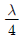
수직접지 안테나- 야기 안테나
- 파라볼라 안테나
(정답률: 54%)
45. 다음 중 발생주기가 불규칙하여 고정통신에 부적합한 전리층은?
- D층
- E층
- Es층
- F층
(정답률: 34%)
46. 다음 중 슬롯 어레이 안테나에 대한 설명으로 적합하지 않은 것은?
- 소형, 경량이다
- 전기적 특성이 좋다.
- 고 이득이지만 부엽이 많다.
- UHF TV 방송. 선박용 레이더 안테나 등에 사용된다.
(정답률: 알수없음)
47. 다음 중 도파관이 마이크로파 전송로로서 갖는 특징에 대한 설명으로 적합하지 않은 것은?
- 방사 손실이 없다.
- 유전체 손실이 없다.
- 저역 통과 여파기로서 동작을 한다.
- 표피작용에 의한 도체의 저항손실이 매우 적다.
(정답률: 67%)
48. 다음 중 접어진(folded) 다이폴 안테나에 대한 설명으로 적합하지 않은 것은?
- 실효길이는 반파장 다이폴 안테나의 약 4배이다.
- 전계강도, 이득, 지향성은 반파장 다이폴 안테나와 같다.
- 급전접 임피던스는 약 300[Ω]으로 반파장 다이폴의 4배이다.
- 반파장 다이폴 안테나에 비해 도체의 유효면적이 크고, Q가 낮으므로 약간 광대역성을 갖는다.
(정답률: 알수없음)
49. 다음 중 비동조 급전의 특징에 대한 설명으로 적합하지 않은 것은?
- 정합장치가 필요하다.
- 급전선상에 정재파가 실린다.
- 장거리 전송에도 손실이 적고 전송효율이 높다.
- 급전선의 길이와 파장은 관계가 없다.
(정답률: 37%)
50. 반파장 다이폴 안테나와 피측정 안테나에서 동일 방사전력으로 방사시킨 전파의 최대 방사 방향에서의 전계강도가 각각 20[μV/m]와 400[μV/m]이었다면 피측정 안테나의 상대이득은 약 몇 [dB]인가?
- 13[dB]
- 26[dB]
- 38[dB]
- 52[dB]
(정답률: 알수없음)
51. 다음 중 롬빅(Rhombic) 안테나의 특징에 대한 설명으로 적합하지 않은 것은?
- 효율이 나쁘고 넓은 설치장소를 필요로 한다.
- 도선 양측의 복사위상은 동상이며 부엽이 적다.
- 8 ~ 13[dB] 정도의 상대이득을 얻을 수 있다.
- 급전점에서 종단정항 방향으로 단향성의 예리한 지향특성을 갖는다.
(정답률: 알수없음)
52. 세로가 1.25[cm], 가로가 2.5[cm]인 구형 도파관에 TE10파가 진행할 때 차단 주파수는 몇 [GHz]인가?
- 12[GHz]
- 9[GHz]
- 6[GHz]
- 3[GHz]
(정답률: 알수없음)
53. 개구 직경이 2[m]인 3000[MHz]용 파라볼라 안테나의 이득은 대략 얼마인가?(단, 개구 효율은 0.6 이다)
- 27.6
- 110
- 1258
- 2366
(정답률: 47%)
54. 반파장 다이폴 안테나에서 안테나로부터의 거리가 d[m], 복사전력을 Pγ[W]이라 할 때 방생되는 최대 전계강도를 나타내는 식으로 가장 적합한 것은?
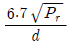
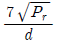
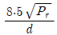
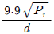
(정답률: 60%)
55. 다음 중 VHF 대역에서 통신 가능 거리를 증가시키기 위한 방법으로 적합하지 않은 것은?
- 안테나 높이를 높인다.
- 이득이 높은 안테나를 사용한다.
- 지향성이 예리한 안테나를 사용한다.
- 안테나의 방사각도를 높게 한다.
(정답률: 90%)
56. 임계 주파수가 4[MHz]인 전리층에 8[MHz]을 인가하였을 때의 도약거리는 약 몇 [Km]인가? (단, 전리층의 겉보기 높이는 150[Km]이다.)
- 420[Km]
- 470[Km]
- 520[Km]
- 570[Km]
(정답률: 54%)
57. 다음 중 진행파 안테나가 아닌 것은?
- 빔 안테나
- 롬빅 안테나
- 어골형 안테나
- 웨이브 안테나
(정답률: 62%)
58. 다음 중 지표파에서 가장 손실이 적어 원거리까지 도달할 수 있는 것은?
- 수직편파를 사용하여 해상을 전파할 때
- 수평편파를 사용하여 해상을 전파할 때
- 수직편파를 사용하여 평야를 전파할 때
- 수평편파를 사용하여 평야를 전파할 때
(정답률: 알수없음)
59. 다음 중 안테나를 광대역성으로 만드는 방법으로 옳지 않은 것은?
- 안테나의 Q를 낮게 만든다.
- 진행파형 안테나를 채택한다.
- 자기상사의 원리를 이용한다.
- 개구면적을 크게 한다.
(정답률: 39%)
60. 다음 중 루프 안테나 특성에 대한 설명으로 적합하지 않은 것은?
- 소형으로 이동이 용이하다.
- 수평면내 지향특성은 8자 지향특성을 갖는다.
- 효율이 나쁘고 급전선과의 정합이 어렵다.
- 야간에는 전리층 반사파의 수직성분이 안테나의 수직도선에 유기되어 측정 오차가 발생한다.
(정답률: 30%)
4과목: 무선통신 시스템
61. 다음 중 마이크로파 장치에서 주파수 체배용으로 많이 사용되는 것은?
- TUNEL DIODE
- SILICON POINT CONTACT DIODE
- VARACTOR DIODE
- SILICON JUNCTION DIODE
(정답률: 알수없음)
62. 다음 중 표준 지구국의 설치장소 선정 시 검토하여야 하는 사항으로 적합하지 않은 것은?
- 우주잡음
- 스카이 라인
- 상호조정거리
- 국내 지상통신의 주파수 상호간섭
(정답률: 54%)
63. 다음 중 대기잡음의 경감대책으로 적합하지 않은 것은?
- 낮은 주파수를 사용한다.
- 비접지 안테나를 사용한다.
- 지향성 안테나를 사용한다.
- 수신기의 선택도를 크게 한다.
(정답률: 알수없음)
64. 다음 중 통신망을 구성하기 위한 준비단계에서 고려사항으로 중요성이 가장 낮은 것은?
- 통신망의 형태
- 전송로의 종류
- 전원설비의 종류
- 통신망 프로토콜
(정답률: 알수없음)
65. 다음 중 IEEE 무선 LAN의 매체접속제어(MAC) 방식은?
- 토큰 패싱
- CSMA/CA
- 토큰 링
- CSMA/CD
(정답률: 알수없음)
66. 다음 중 마이크로파 무선중계방식에서 검파중계방식에 대한 설명으로 적합하지 않은 것은?
- 복조기가 있어야 한다.
- 펄스통신에서는 S/N 비가 좋다.
- 중계국이 많은 경우에 유리하다.
- 중간 중계소에서 회선의 분기, 삽입이 가능하다.
(정답률: 알수없음)
67. 2단 증폭기에서 초단 증폭기의 이득 G1=10, 잡음지수 F1=2이고, 다음 단 증폭기의 이득 G2=20, 잡음지수 F2=3일 때 이 증폭기의 종합잡음지수는 얼마인가?
- 2.1
- 2.2
- 2.3
- 2.7
(정답률: 55%)
68. 다음 중 IS-95 CDMA에서 원근단 간섭문제를 해결하기 위하여 사용하는 제어 방법으로 가장 적합한 것은?
- 이동국 송신 출력 레벨 제어
- 기지국 송신 출력 레벨 제어
- 기지국 수신 출력 레벨 제어
- 이동국 수신 출력 레벨 제어
(정답률: 29%)
69. 다음 중 무선 랜의 전송방식에 해당하지 않는 것은?
- 적외선 방식
- 확산 스펙트럼 방식
- 초 광대역 무선통신 방식
- 협대역 마이크로웨이브 방식
(정답률: 37%)
70. IS-95 CDMA 이동통신 시스템에서 기지국이 단말기 방향으로 음성을 보낼 때 채널을 구분하는 방법은?
- 시간슬롯을 할당해서 구분
- Walsh 코드를 사용해서 구분
- PN 시퀀스를 시용해서 구분
- 주파수를 분할해서 구분
(정답률: 알수없음)
71. 다음 중 이동통신 시스템에서 이동체의 움직임과 가장 관련이 잇는 것은?
- 도플러 효과
- 도일 채널 간섭 효과
- 열잡음 효과
- 원근 간섭 효과
(정답률: 92%)
72. 다음 중 위성통신시스템 설계시 고려사항으로 적합하지 않은 것은?
- 전파손실
- 전송지연
- 잡음 및 간섭
- 위성월식
(정답률: 90%)
73. 다음 중 마이크로웨이브 전송구간의 페이딩 발생 대처방안으로 가장 적합한 것은?
- 위상증폭기 사용
- 채널분파기 사용
- 구형 도파관 사용
- 공간 다이버시터 사용
(정답률: 알수없음)
74. 다중경로에 의한 시간 지연을 갖고 도달하는 각 반사파를 독립적으로 분리하여 복조할 수 있게 구성된 수신기는?
- 헤테로다인 수신기
- 호모다인 수신기
- 레이크 수신기
- 린 콤팩스 수신기
(정답률: 91%)
75. 동일 기지국 내에서 섹터 간 전파가 겹치는 지역에서 통화가 이루어지면 현재 서비스를 받고 있는 섹터와 통신을 단절 없이 새로운 인접 섹터와 통화를 개시하는 핸드오프는?
- 하드 핸드오프 (hard hanf off)
- 소프트 핸드오프 (soft hanf off)
- 소프터 핸드오프 (softer hanf off)
- CDMA - 아날로그 핸드오프
(정답률: 37%)
76. 다음 중 IS-95 CDMA 기술을 사용하는 이동전화 시스템에 대한 설명으로 적합하지 않은 것은?
- 확산코드로 사용되는 Walsh 코드는 코드 간 직교성을 갖는다.
- 레이크 수신기의 사용으로 페이딩에 대한 영향을 즐일 수 있다.
- 주파수 도약 방식으로 인해 암호화 기능이 있어 감청이 쉽지 않다.
- 전력 제어를 통해 셀 내의 사용자로부터 기지국에 수신되는 신호 강도를 균일하게 유지한다.
(정답률: 70%)
77. OSI 참조모델에서 전송제어, 흐름제어, 오류제어 등의 역할을 수행하는 계층은?
- 세션 계층
- 네트워크 계층
- 물리 계층
- 데이터링크 계층
(정답률: 82%)
78. 위성통신의 주요 기본구성 요소 중 지구국 부문이 아닌 것은?
- 주파수 변환기
- 저잡음 증폭기(LNA)
- 대전력 증폭기(HPA)
- 트랜스폰더(Transponder)
(정답률: 알수없음)
79. 다음 중 정지위성에 대한 설명으로 적합하지 않은 것은?
- 정지위성의 주기는 12시간 이다.
- 적도 상공 약 36000[km]에 위치하고 있다.
- 1개 정지위성의 통신 범위는 지표의 약 40[%] 정도이다.
- 전파경로가 길어 평균 0.25초 정도의 전파지연이 발생한다.
(정답률: 75%)
80. 다음 중 IS-95 CDMA 이동통신 시스템에서 사용하고 있는 Short PN 코드에 대한 설명으로 적합하지 않은 것은?
- 코드의 길이는 215이다.
- 주기는 41.4일이다.
- I 채널용과 Q 채널용 두 종류가 있다.
- Short PN 코드발생기는 15개의 천이 레지스터, 2진 가산기 등으로 구성된다.
(정답률: 알수없음)
5과목: 전자계산기 일반 및 무선설비기준
81. 부동 소수점 수의 표현 구조로 적합한 것은?
- 부호 + 지수 + 소수점
- 부호 + 가수 + 소수점
- 부호 + 지수 + 가수
- 부호 + 지수 + 소수점 + 가수
(정답률: 알수없음)
82. 기억공간을 효율적으로 분배하고 관리하기 위해 사용하는 기억공간 할당 기법 중 적재될 수 있는 공간 중에서 첫 번째 분할영역을 선택하여 할당하는 기법은?
- 최초적합(first fit) 기법
- 최적적합(best fit) 기법
- 최악적합(worst fit) 기법
- FIFO 기법
(정답률: 알수없음)
83. 마이크로프로세서는 크게 CISC(Complex Instruction Set Computer)와 RISC(Reduced Instruction Set Computer)로 나뉜다. 다음 중 RISC의 특징을 설명한 것으로 옳지 않은 것은?
- CISC보다 적은 양의 레지스터를 이용해 구동한다.
- 명령어의 길이가 일정하다.
- 대부분의 명령어들은 한 개의 클럭 사이클로 처리된다.
- 소수의 주소기법(addressing mode)을 사용한다.
(정답률: 알수없음)
84. 다음 중 용어에 대한 설명이 옳지 않은 것은?
- 비트(bit) : 두 가지 상태를 나타내는 정보표현의 최소 단위
- 바이트(byte) : 한 개의 영문자를 표현할 수 있는 단위
- 풀워드(full word) : 8byte가 모여 이루어진 워드
- 레코드(record) : 관련된 필드가 모여 하나의 레코드를 구성
(정답률: 알수없음)
85. 다음 자바언어에 대한 설명 중 틀린 것은?
- 분산 환경을 지원하는 차세대 객체지향 언어이다.
- 다중 스레드(thread)를 지원하는 언어이다.
- 프로그래밍 언어이다.
- 메모리를 겹쳐 쓰기(over-write)할 수 있다.
(정답률: 알수없음)
86. 하나 이상의 프로그램 또는 연속되어 있지 않은 저장 공간으로부터 데이터를 모은 다음, 데이터들을 메시지 버퍼에 집어 넣고, 특정 수신기나 프로그래밍 인터페이스에 맞도록 그 데이터를 조직화 하거나 미리 정해진 다른 형식으로 변환하는 과정을 일컫는 것은?
- streaming
- buffering
- marshalling
- porting
(정답률: 34%)
87. 다음 중 선점형 스케줄링이 아닌 것은?
- SJF 스케줄링
- RR 스케줄링
- SRT 스케줄링
- MFQ 스케줄링
(정답률: 알수없음)
88. 다음 마이크로 연산은 어떤 사이클에서 수행되는 동작을 표현한 것인가?
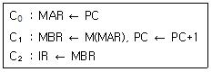
- 인출
- 실행
- 인터럽트
- 간접
(정답률: 37%)
89. 전자계산기의 중앙 제어 처리 장치의 직접 제어 상태에서 이루어지는 환경을 온라인 시스템 구조라 할 때, 이 때 요구되는 기술 사항 중 맞지 않는 것은?
- 응답 시간은 일반적으로 수초 이하 또는 수 밀리초 이다.
- 처리 요구 및 처리 종류는 시간적으로 랜덤하게 발생한다.
- 입ㆍ출력이 행해지는 단말 장치의 수는 하나이고 그 입ㆍ출력은 병행하여 이루어진다.
- 시스템 신뢰성 즉 MTBF, MTTR 등이 엄격하게 요구된다.
(정답률: 73%)
90. 다음 중 10진수 12를 그레이 코드(gray code)로 변환한 것으로 옳은 것은?
- 1110
- 1010
- 1011
- 1111
(정답률: 47%)
91. 전력선통신설비 및 유도식 통신설비에서 발사되는 주파수 허용편파는 몇 [%] 인가?
- 0.01[%]
- 0.⑤[%]
- 0.1[%]
- 0.5[%]
(정답률: 67%)
92. 다음 중 방송통신위원회가 주파수 분배 시 고려하여야 할 사항에 속하지 않는 것은?
- 전파이용기술의 발전추세
- 중ㆍ장기 주파수 이용 계획
- 전파를 이용하는 서비스에 대한 수요
- 주파수의 이용현황 등 국내의 주파수 이용여건
(정답률: 30%)
93. 주파수 할당을 받은 자가 주파수 할당을 받은 날로부터 몇 년 후에 주파수 이용권을 양도하거나 임대할 수 있는가?
- 1년
- 2년
- 3년
- 5년
(정답률: 43%)
94. 다음 중 준공검사를 받지 아니하고 운용할 수 있는 무선국에 속하지 않은 것은?
- 공해 지역에 개설한 무선국
- 국가안보를 위하여 개설하는 무선국
- 외국에서 운용할 목적으로 개설한 육상이동지구국
- 30와트 이상의 무선설비를 시설하는 어선의 선박국
(정답률: 67%)
95. 다음 ( ) 안에 들어갈 내용으로 가장 적합한 것은?
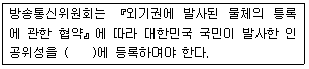
- INTELSAT
- 국제연합
- 국제전기통신연합
- 국제인공위성협회
(정답률: 54%)
96. 다음 중 공중선계가 충족하여야 하는 조건으로 적합하지 않은 것은?
- 공중선은 이득이 높을 것
- 급전선으로부터 충분한 복사가 이루어 질 것
- 정합은 신호의 반사손실이 최소화되도록 할 것
- 지향성은 복사되는 전력이 목표하는 방향을 벗어나지 아니하도록 안정적일 것
(정답률: 17%)
97. 무선설비의 운용을 위한 전원은 전압변동률이 정격전압의 몇[%] 이내로 유지할 수 있어야 하는가?
- ±1[%]
- ±3[%]
- ±5[%]
- ±10[%]
(정답률: 60%)
98. “공중선 전력에 주어진 방향에서의 반파다이폴의 상대이득을 곱한 것” 으로 정의되는 것은?
- 규격전력
- 실효복사전력
- 첨두포락선전력
- 등가등방복사전력
(정답률: 알수없음)
99. 다음 무선설비 중 형식등록을 하여야 하는 기기?
- 네비텍스 수신기
- 경보자동전화장치
- 이동가입무선전화장치
- 비상위치지시용 무선표지설비
(정답률: 알수없음)
100. 다음 중 무선국 개설허가의 유효기간이 1년인 것은?
- 이동국
- 간이무선국
- 선상통신국
- 실용화시험국
(정답률: 42%)
다른 보기들은 모두 궤환 증폭기의 특징을 올바르게 설명하고 있다. 궤환으로 인해 Rin과 Rout이 감소하고, 전님이득 Io/Is도 감소한다.